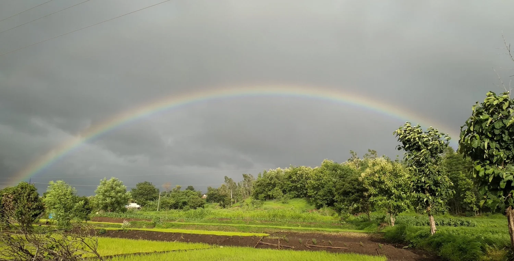

Who We Are
Rooted in Hawaiʻi.
For over two decades, Hawaiʻi Appleseed has used a combination of policy advocacy and community engagement to take on the root causes of poverty and inequality.
Read Our Story
Healthy, accessible food for every Hawaiʻi family.
ExploreHomes Hawaiʻi's families can actually afford.
ExplorePay and protections that match the cost of living here.
ExploreSafer streets, smarter transit, lower costs.
ExploreA fairer tax code for a thriving Hawaiʻi.
ExploreOur Hawaiʻi Budget Tracker compares the Governor's budget proposal against the House and Senate versions — program by program, department by department — across all 700+ state programs.
For over two decades, Hawaiʻi Appleseed has used a combination of policy advocacy and community engagement to take on the root causes of poverty and inequality.
Read Our StoryYour gift funds the research, advocacy, and legal work that moves policy for Hawaiʻi's families.
Donate 02Add your voice. Follow the issues, contact lawmakers, and help build the public pressure that wins.
Advocate 03Get our newsletter and action alerts, and be the first to know when your engagement matters most.
Subscribe